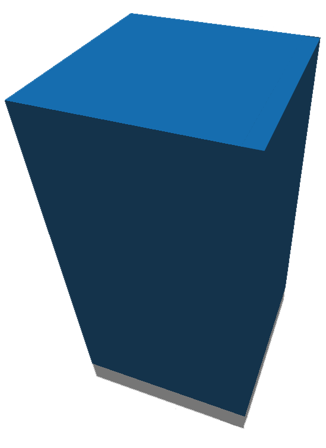
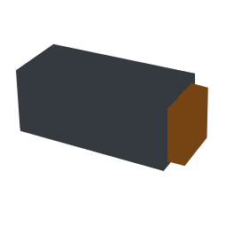
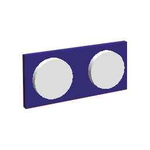

Sensors
robots:sensors
Sensors are capable of perceiving the environment around the robot and returning the detected values.
Table of contents:
Light-color sensor
The light/color sensor is capable of perceiving, as the name implies, light and color. Its functionality is determined by a reading of a 10x10 image to determine what color or light value is being read.

Touch sensor
The touch sensor is capable of perceiving touch and returning a boolean.

Ultrasonic Sensor
The ultrasonic sensor is capable of perceiving distance by projecting raycasts forward in a triangular shape.

Bult-in sensors
All bot controllers regardless of the robot have built-in sensors, such as:
Compass
The compass sensor returns a value from 0 to 359 of the robot's perceived position.
Gyroscope
The gyroscope returns the perceived robot inclination.
Temperature
Returns the perceived heat. Candles and Live Victims.